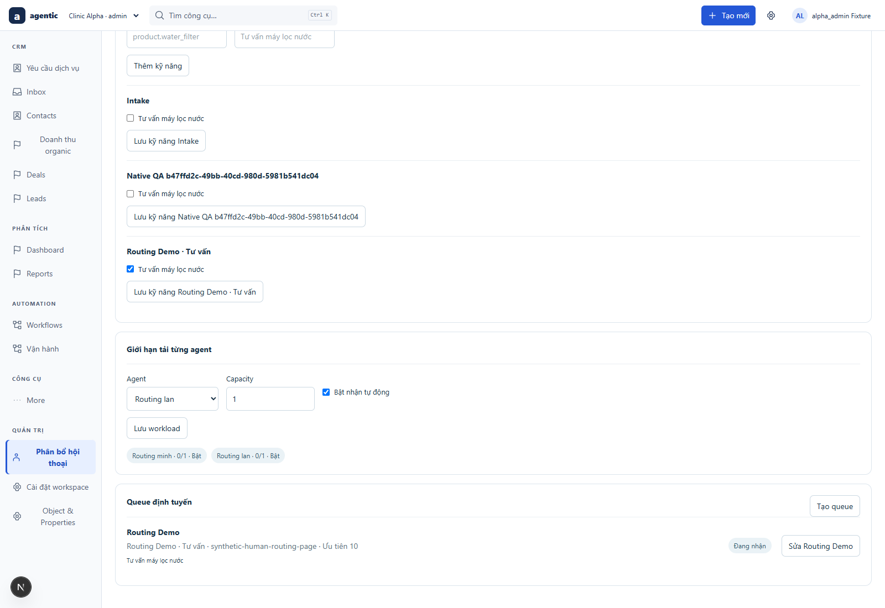
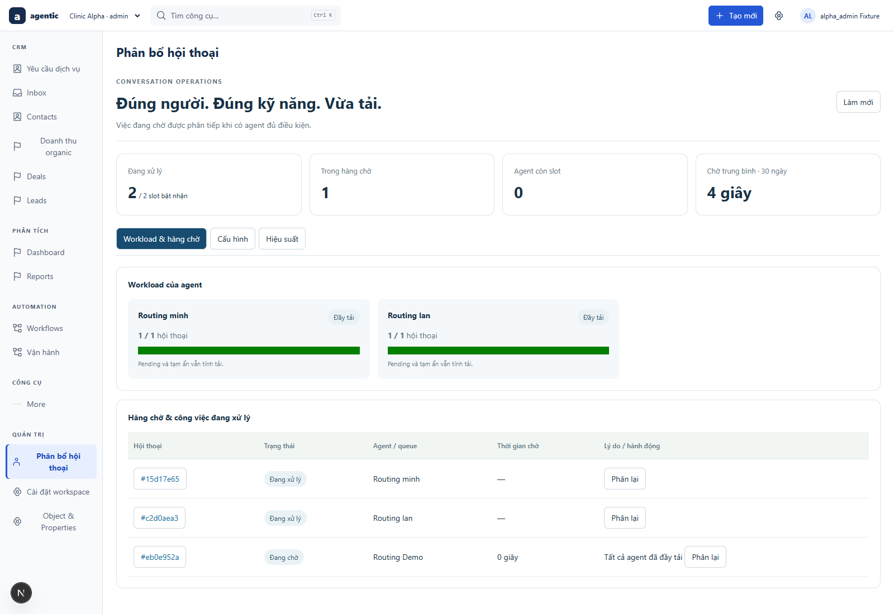
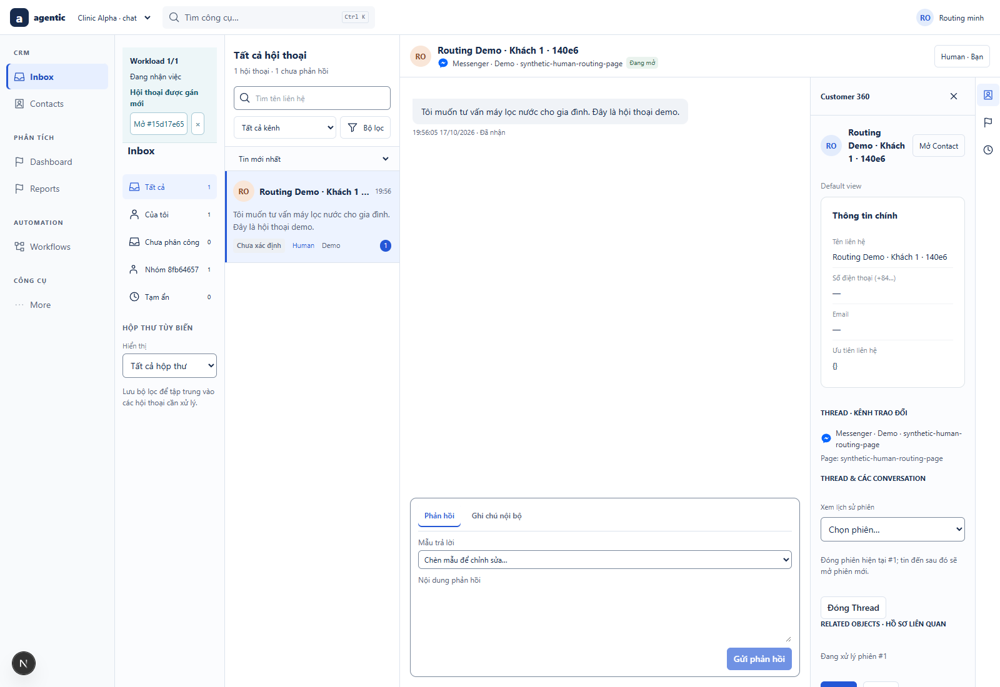
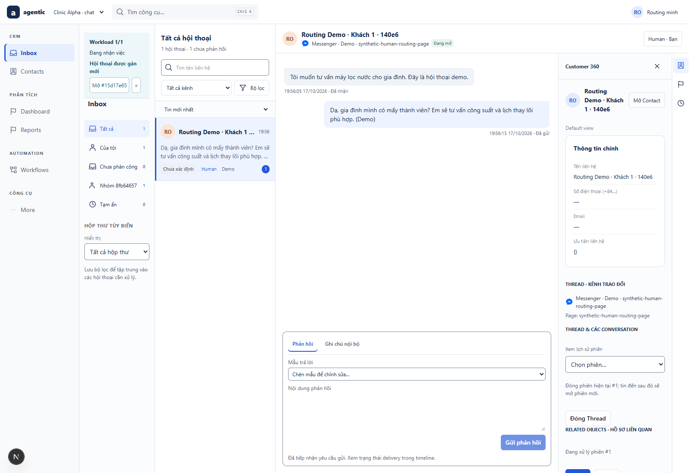
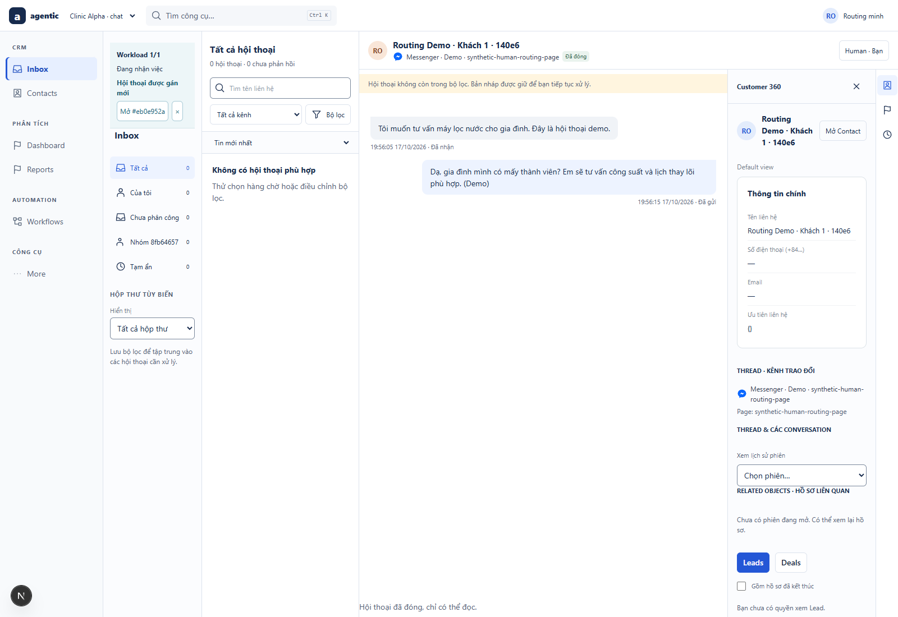
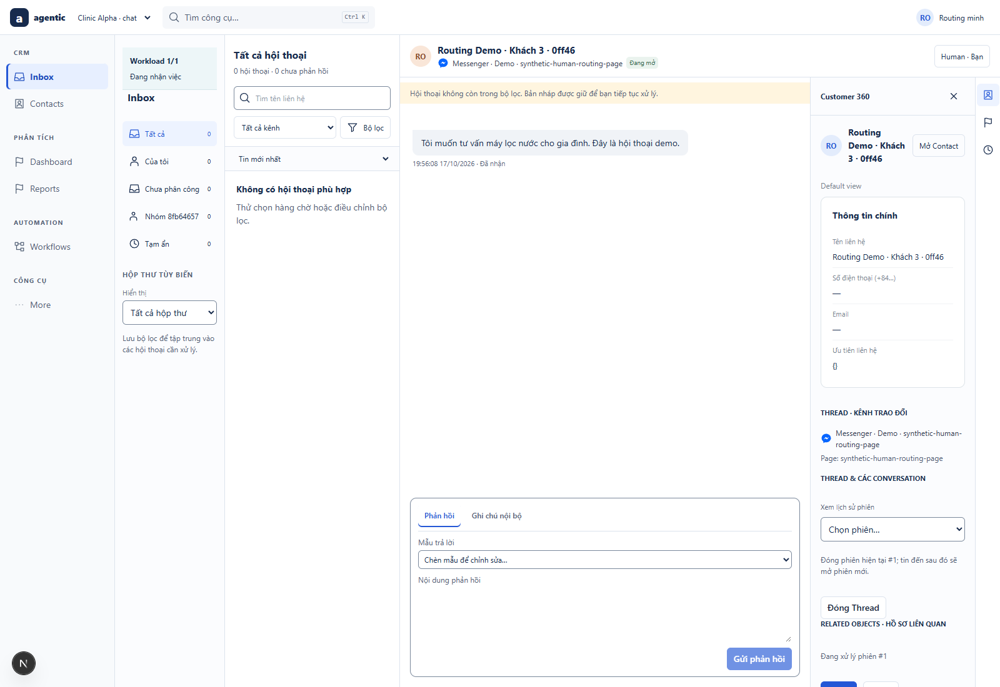
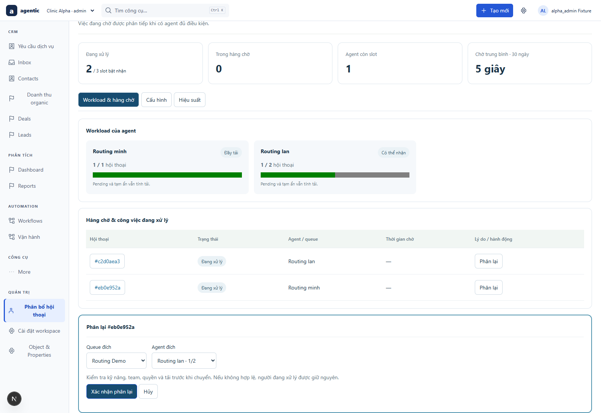
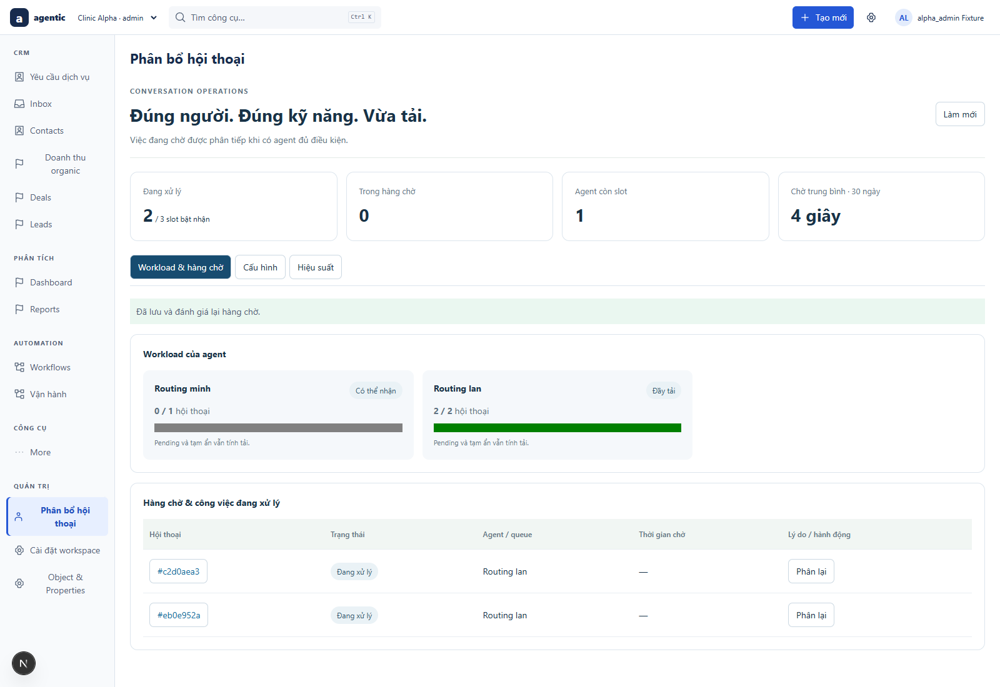
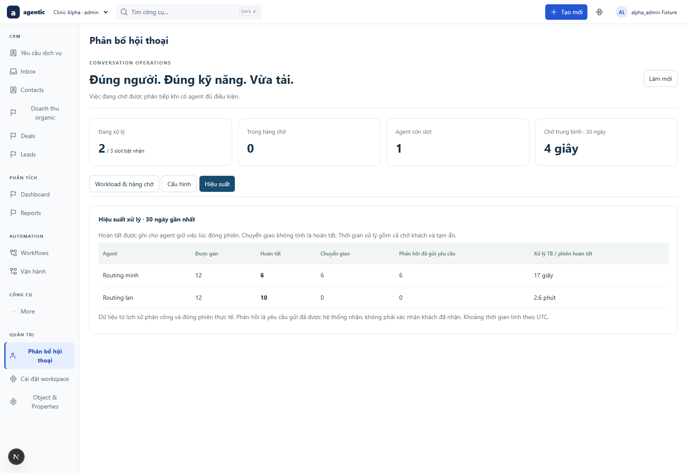
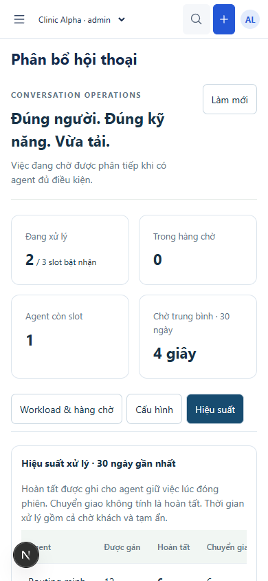

1. Admin cấu hình kỹ năng, team và capacity

Admin gán kỹ năng cho team → agent tư vấn → close → tự nhận việc tiếp → admin phân lại → báo cáo ghi nhận. Ảnh chụp ứng dụng thực, không phải mockup. Kênh gửi nhận là mock_messenger local.
Close → gán tiếp quan sát lần này: 3992ms. Đây không phải cam kết SLO. Fixture được giữ qua các lần chạy nên chỉ số30ngày cộng dồn.









